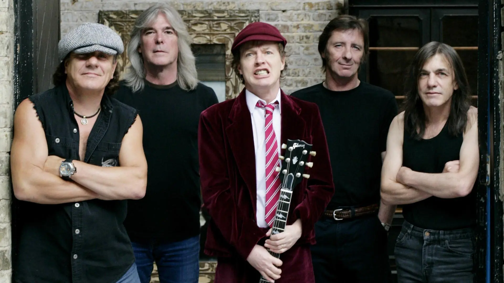

Hard Rock
El término hard rock suele abarcar a los derivados y subgéneros del rock más «pesados» y «rudos» que el tradicional, entre los cuales se puede mencionar al heavy metal, el glam rock, el grunge, el glam metal, el rock sureño, el stoner rock, el punk rock e incluso el AOR entre otros, considerados como subgéneros comprendidos dentro del hard rock, o géneros derivados del mismo.
Aunque The Kinks fue el primer artista conocido en ser catalogado como de este género con su canción de 1964 «You Really Got Me», sería otra mítica banda de rock como The Jimi Hendrix Experience, quien sería considerada a partir de 1966, como una de las verdaderas creadoras del rock duro como entidad tangible y concreta. Asimismo, durante los años 1960 aparacieron otras bandas que practicaron variantes primitivas de este estilo y son consideradas como pioneras del género, artistas entre las que aparecen bandas como The Rolling Stones, The Beatles, Steppenwolf, MC5, Vanilla Fudge, The Amboy Dukes, Iron Butterfly, Blue Cheer y The Who.
Sin embargo, comúnmente se considera que quienes consolidaron al hard rock y sentaron sus bases musicales fueron Led Zeppelin, Deep Purple y Black Sabbath a principios de la década de los 70. Entre mediados y finales de los setenta, AC/DC, los glamorosos Aerosmith, Kiss, Whitesnake, Queen, Alice Cooper y Van Halen dieron continuidad al hard rock junto a grupos como Bad Company, Rainbow, los progresivos Rush, Scorpions, Thin Lizzy y UFO, los escoceses Nazareth o la Ian Gillan Band, quienes terminaron de moldear al género en su totalidad.
Sus canciones suelen estar en una tonalidad mayor, con un uso maestro de las tonalidades menores; se usa mucho la escala pentatónica, al igual que en el rock, y los acordes tradicionales se sustituyen a menudo por acordes de quinta. Las progresiones de acordes se asocian a menudo a los grados I-V o I-V-VIII de la escala, al igual que en el rock and roll. Los efectos de distorsión de las guitarras cobran protagonismo, la batería puede alcanzar un rango de 100-150 golpes por minuto, siendo 120 un valor habitual. El solo de la guitarra es una parte muy importante de la canción, tanto como la letra y la melodía de la voz. En cuanto a las letras, suelen ser más oscuras en el heavy metal y más festivas en el hard rock (a excepciones), tratando en numerosas ocasiones y, sobre todo, en los años ochenta del pasado siglo, sobre diversión, alcohol y chicas. Aunque las estructuras son similares en el hard rock y el heavy metal, el heavy metal es ligeramente más complicado en estructuras o, quizás, se presta más a temas más largos, con pasajes que modulan a tonalidades diferentes de la original y de su relativo mayor.